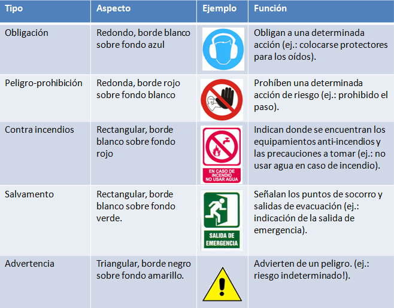

Material resumido por David Romero Santos
Cuando oyes hablar de riesgos laborales, como a todos, te vendrá a la cabeza la imagen de un obrero sobre un andamio. Pocas personas asocian que los accidentes laborales se producen en todas las actividades profesionales: absolutamente en todas. Evidentemente, habrá profesiones con más riesgos que otras, pero el mayor peligro que corre el trabajador actual es desconocer los peligros inherentes a su actividad.
Si te planteas la actividad de un informático, en concreto de un profesional que se dedica a la reparación de equipos, el riesgo más evidente que se te ocurrirá será la electricidad. Manejar ordenadores, desmontarlos, implica el riesgo de contacto con corrientes eléctricas (de bajo y alto voltaje). Sin embargo no es el único riesgo: las posturas empleadas al sentarse, el contacto con elementos químicos de ciertos consumibles (tóner), el desgaste visual por el empleo de pantallas, etc…
Para poder identificar los riesgos asociados a nuestra actividad, es necesario que te definamos primero una serie de términos relacionados con la seguridad laboral.
Marco Legislativo: lo constituyen las normativas relacionadas con la seguridad en el puesto de trabajo. Básicamente son dos, el Real Decreto RD 486/1997 (por el que se establecen las disposiciones mínimas de seguridad y salud en los lugares de trabajo), y la Ley de Prevención de Riesgos Laborales (LPRL , Ley 31/1995 de 8 de Noviembre, BOE nº269 10/11/1995). Tienes que saber que, desde la Comunidad Económica Europea, la directriz principal a éste respecto es la directiva 89/391/CEE.
Puesto de Trabajo: es el lugar físico donde cada trabajador realiza su actividad, es decir, el espacio (o espacios) donde transcurre su jornada laboral. El puesto de trabajo está relacionado, por tanto, con el conjunto de actividades que el trabajador debe desarrollar. Para que el trabajador pueda desempeñar su trabajo de una forma adecuada, es necesario que se mantengan unos parámetros ambientales óptimos de temperatura, ventilación e iluminación.
Prevención: conjunto de actividades o medidas adoptadas o previstas en todas las fases de actividad de la empresa con el fin de evitar o disminuir los riesgos derivados del trabajo.
Riesgo Laboral: posibilidad de que un trabajador sufra un determinado daño derivado del trabajo. Para calificar un riesgo desde el punto de vista de su gravedad, se valorarán conjuntamente la probabilidad de que se produzca el daño y la severidad del mismo.
Daños derivados del trabajo: las enfermedades, patologías o lesiones sufridas con motivo u ocasión del trabajo.
Factores de Riesgo: aquellos procesos, actividades, operaciones, equipos o productos que, en ausencia de medidas preventivas específicas, originen riesgos para la seguridad y la salud de los trabajadores y trabajadoras que los desarrollan o utiliza. La Ley de Prevención de Riesgos Laborales LPRL los denomina “Entidades potencialmente peligrosas”.
Condición de trabajo: cualquier característica del mismo (instalaciones, equipos, productos, agentes físicos, químicos, y biológicos presentes en el puesto de trabajo, etc…) que pueda tener una influencia significativa en la generación de riesgos para la seguridad y la salud del trabajador.
Equipo de protección individual: cualquier equipo destinado a ser llevado o sujetado por el trabajador o trabajadora para que le proteja de uno o varios riesgos que puedan amenazar su seguridad o su salud en el trabajo, así como cualquier complemento o accesorio destinado a tal fin.
Por otro lado, debes conocer que, debido a las condiciones de trabajo, los trabajadores y trabajadoras pueden sufrir dos tipos de daños:
Enfermedad profesional: deterioro lento y paulatino de la salud del trabajador o trabajadora, producido por una exposición crónica a situaciones adversas, si éstas están producidas por el ambiente en el que se desarrolla el trabajo, o bien por la forma en la que esté organizado.
Accidente laboral: toda lesión corporal que el trabajador o trabajadora sufra con ocasión o por consecuencia del trabajo. Esto incluye (entre otros):
Para evitar enfermedades y accidentes laborales, es necesario que identifiques correctamente los distintos factores de riesgo asociados a la actividad laboral. En tu caso, la instalación y mantenimiento de equipos electrónicos puedes considerar (inicialmente) los siguientes:
Para prevenir los riesgos laborales de una forma sistemática, las empresas deberán seguir al menos las siguientes medidas:
Para prevenir los riesgos laborales de un taller de montaje y mantenimiento de equipos, hay una serie de normas básicas que debes cumplir. Una posible enumeración sería la siguiente:
Consideraciones que debes tener en cuenta:
En la siguiente figura puedes apreciar las distintas características de los principales tipos de señales:

Como puedes ver, las señales se basan en el uso de colores de seguridad, (a los que se atribuye una significación determinada: rojo peligro, azul obligación, verde información, amarillo advertencia), y símbolos o pictogramas (imágenes que describen una situación u obligan a un comportamiento determinado). Por otro lado, en electricidad, puedes identificar las distintas tensiones de los conductores a través del color de los cables:
Como primera consideración, te debe quedar claro que los riesgos eléctricos dependen de la actividad que como trabajador desarrolles. No es lo mismo el riesgo que corres como programador (o usuario cualquiera de equipamiento informático), que el riesgo como instalador o montador de equipos.
Evidentemente, las posibilidades de electrocución del primer caso son muy inferiores a las del segundo, pero no inexistentes. Sea como sea, en ambos casos estarás expuesto/a a un malfuncionamiento eléctrico del equipo, y a sus consecuencias (en mayor o menos medida).
Considera, por tanto, que existen dos grandes tipos de riesgos eléctricos:
Para evitar accidentes, el propio reglamento de baja tensión establece una serie de medidas protectoras. Entre ellas, se establece una norma que te obliga a desconectar todos los interruptores y a colocar a tierra toda línea de tensión, siempre que realices trabajos en circuitos eléctricos. Además, para asegurar que nadie te modifica la desconexión, es obligatorio que coloques una advertencia indicando “OPERARIOS TRABAJANDO. NO CONECTAR” (sobre un fondo amarillo con letras rojas o negras).
Los componentes electrónicos más peligrosos (eléctricamente), suelen contar con advertencias propias sobre el riesgo de electrocución:
Mientras realizas el mantenimiento de sistemas no siempre te será posible realizar las operaciones en frío (con la corriente desconectada). En entornos de alta productividad, como servidores, muchas operaciones las realizarás en caliente, (hot swapp). No solo con la corriente eléctrica conectada, sino incluso con el ordenador encendido. Esto es posible gracias a la utilización de elementos redundantes (dos elementos haciendo al tiempo la misma función), con los cuales es posible cambiar uno de ellos mientras el otro sigue funcionando. En estos casos, descubrirás que los propios equipos tienen el suficiente aislante para realizar la operación sin peligro.
Material resumido por David Romero Santos

Materiales actualizados por el profesorado de la Junta de Andalucía

Materiales desarrollados inicialmente por el Ministerio de Educación, Cultura y Deporte